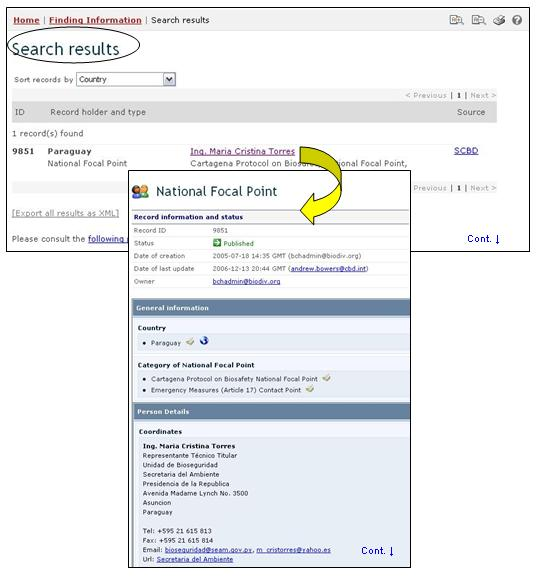

عنوان الموقع على الشبكة: http://bch.cbd.int/contacts/
تقتضي المادة 19 من البروتوكول بتعيين عدد من المؤسسات الوطنية و نقاط الاتصال الوطنية. وترد المعلومات حول هذه المؤسسات ونقاط الاتصال بالاضافة الى المواقع الالكترونية وقواعد البيانات الوطنية في صفحة البحث فيما يتعلق بنقاط الاتصال الوطنية.
ويمكن النفاذ إلى آلية بحث من أجل المعلومات حول نقاط الاتصال الوطنية من وصلة في قائمة الخيارات المنسدلة الخاصة بإيجاد المعلومات على شريط التصفح أو من الوصلة في قائمة الخيارات إلى اليسار في صفحة إيجاد المعلومات أو من الوصلة في نص نقاط الاتصال الوطنية على نفس الصفحة.

صورة 3
وبفضل قاعدة البيانات الخاصة بنقاط الاتصال الوطنية، يمكن للمستعمل أن يبحث عما يلي:
1. نقاط الاتصال الوطنية المنصوص عليها في البروتوكول، المسؤولة عن إدارة التراسل والإبلاغ بين أمانة اتفاقية التنوع البيولوجي والحكومات التي تتبعها نقاط الاتصال الوطنية؛
2. نقاط الاتصال الوطنية التابعة لغرفة تبادل معلومات السلامة الأحيائية، والمسؤولة عن التنسيق مع أمانة اتفاقية التنوع البيولوجي فيما يخص تطوير وتنفيذ غرفة تبادل معلومات السلامة الأحيائية؛
3. نقاط الاتصال في حالات الطوارئ من أجل تلقي الإخطارات بموجب المادة 17 من البروتوكول؛
4. السلطات الوطنية المختصة التي تعيِّنها الحكومات وتأذن لها بتحمل المسؤولية عن أداء المهام الإدارية التي تقتضيها المادة 19 من البروتوكول؛
5. المواقع الشبكية وقواعد البيانات الوطنية الخاصة بالسلامة الاحيائية

صورة 4

صورة 5
وفي صفحة البحث من أجل نقاط الاتصال الوطنية، يوجد خمسة أُطر لمعايير البحث معروضة من أجل تنقيح عمليات البحث في قاعدة البيانات هذه.
ويتوفر لكل اطار قائمة خيارات منسدلة والتي من خلالها يتم انتقاء المعيار المطلوب. التركيب الاجمالي لقائمة الخيارات المنسدلة هي الفقرة الاولى على رأس قائمة الخانة. الزر الموجود على جهة اليمين من كل اطار يسمح للمستخدم بتفعيل عدة اختيارات. عندما يكون المستخدم في اسلوب الاختيارات المختلفة، من الممكن ان يضاف معايير مختلفة للاختيارات من خلال الضغط على المعيار المناسب والكبس على مفتاح (Ctrl).
الإطار 1 {اختيار البلد} يسرد جميع أسماء البلدان في قائمة الخيارات المنسدلة، بحيث يستطيع المستعملون اختيار بلد محدد فيما يتعلق بمدخلات السجلات

صورة 6
وترد في الإطار 2 {اختيار مجموعة البلدان} تسرد مجموعات البلدان في قائمة اختيارات منسدلة لكي يستطيع المستعملون اختيار مجموعة محددة من البلدان لإجراء بحث ما. قائمة مجموعة البلدان تتضمن اهم المجموعات الجغرافية و السياسية للبلدان وتسمح لتضييق نطاق البحث بالسجلات المقدمة من قبل اعضاء المجموعة/المجموعات المختارة.

صورة 7
ويرد في الإطار 3 {نوع نقطة الاتصال الوطنية} يسرد جميع فئات نقاط الاتصال الوطنية المتوفرة في قاعدة البيانات وهو يسمح للمستعمل بتضييق نطاق البحث ليقتصر على نقاط الاتصال الوطنية ذات مسؤوليات محددة.

صورة 8
والإطار 4 {تاريخ الوثيقة المدونة} يسمح للمستعمل بتضييق نطاق البحث ليقتصر على موعد إدخال الوثيقة في غرفة تبادل معلومات السلامة الأحيائية. وتعرض قائمة الاختيارات المنسدلة عدداً من الخيارات لكي تقتصر عملية البحث على السجلات المقدمة ضمن المهلة المختارة (على سبيل المثال "آخر يوم"، "الشهر الفائة"، "السنة الفائتة"،الخ).

صورة 9
الإطار 5 {بحث الكلمة الدليلية} ايُعرض فرصة لاستخدام الكلمات الدليلية لتضييق نطاق البحث. ويستطيع المستعمل أن يستخدم تكوين جملة الكلمات الدليلية المعيارية (و/أو) للبحث مع استخدام عدة كلمات أو أجزاء أساسية من الكلمات (استيراد أو تصدير). البحث الذي يستخدم الكلمات الدليلية يصدر نتائج بالسجلات التي تتضمن النص الذي يتم البحث عنه فقط وليس المفردات التي لم يتم ادخالها (على سبيل البحث عن "الذرة" ينتج قائمة بالسجلات التي تحوي فقط كلمة "الذرة" ولكن ليس "Corn" أو "Zea mays").

صورة 10
وتوفر صفحة البحث ثلاثة ازرار لانتاج قائمة بالسجلات. لبدء إجراء البحث. ويسمح زرار للمستعمل بأن يشغّل بحثاً قائماً على معايير البحث المختارة في خانات آلية البحث. وتجئ نتائج البحث مرتبة أبجدياً وفقاً لأسم البلد. ويسمح اختيار تصفح جميع السجلات للمستعمل أن يحصل على قائمة بجميع السجلات المدونة في قاعدة البيانات هذه.

صورة 11
وتوجد لدى صفحات نتائج البحث آلية تصنيف أعلى قائمة السجلات. ويمكِّن استخدام هذه الآلية لتصنيف السجلات وفقاً للمعايير المحددة لتلك الفئة من المعلومات. ويلاحظ هنا أن المعايير تتغيَّر عندما يختار المستعمل معايير بحث مختلفة.

صورة 12
مثال 1: قد يود مستعمل أن يحدد نقاط الاتصال في الباراغواي فيما يتعلق بمسائل تتصل بانتقال كائنات عضوية محوَّرة عبر الحدود. فباختيار البراغوي من قائمة الخيارات المنسدلة لاختيار بلد و"نقطة اتصال التدابير الطارئة (المادة 17)"، من قائمة الخيارات المنسدلة لفئة نقطة الاتصال الوطني، يقوم المستعمل بتضييق نطاق البحث ليقتصر على السجلات المرجح إنها تقدم المعلومات اللازمة.

صورة 13
وعند الضغط على زر إبحث الآن ، تبين صفحة نتائج البحث ما هي نقاط الاتصال الوطنية في البراغوي التي تتحمل بعض المسؤولية عن التدابير الطارئة. ويسمح اختيار عنوان المؤسسة للمستعمل أن يفتح السجل الذي يحتوي على تفاصيل متعلقة بنقطة الاتصال الوطنية.

صورة 14
مثال 2: قد يرغب المستعمل نفسه في تحديد نقاط الاتصال الخاصة بغرفة تبادل معلومات السلامة الأحيائية في بلدان رابطة أمم جنوب شرق آسيا. ويختار المستعمل آسيا - المحيط الهادئ (Asia - Pacific) - رابطة أمم جنوب شرق آسيا (Association of southeast Asians Nations) في إطار اختيار مجموعة البلدان، ونقطة الاتصال الخاصة بغرفة تبادل معلومات السلامة الأحيائية في خانة فئات نقاط الاتصال الوطنية. واختيار زر إبحث الآن، يعرض مجموعة نتائج بين مراكز الاتصال في مركز تبادل المعلومات متعلقة بالسلامة الأحيائية في البلدان التي هي أعضاء في رابطة أمم جنوب شرق آسيا.
صورة 15

صورة 16